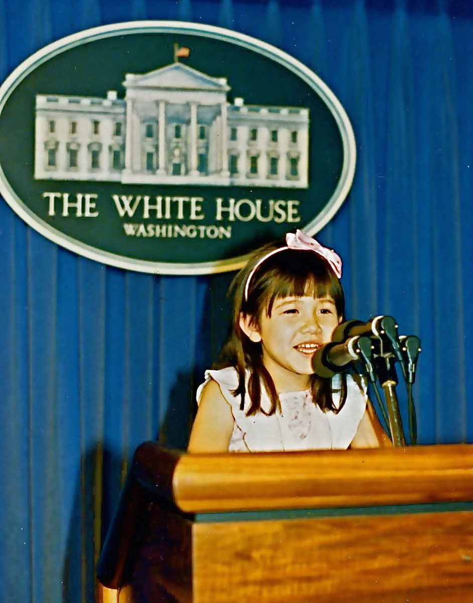
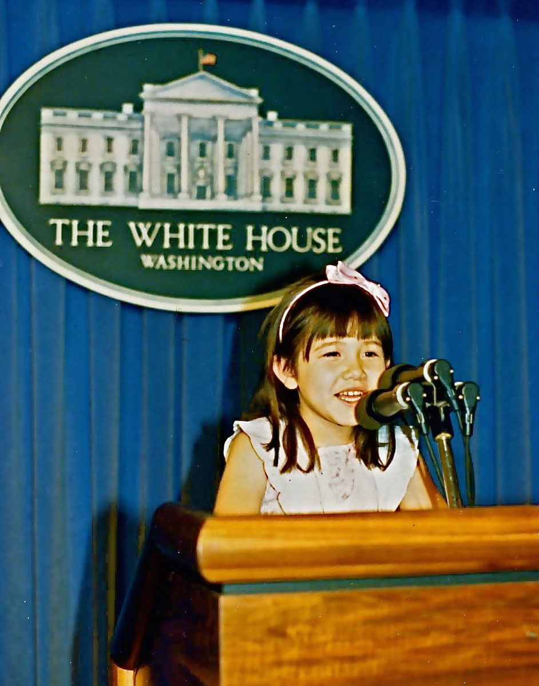

The Reagan Years
1980-1988
1980-1988
When CNN signed on in June 1980, the presidential contest between incumbent Jimmy Carter and Republican candidate Ronald Reagan was already in full swing. The major issues of the campaign were the Iran Hostage Crisis and the country’s faltering economy. President Carter’s running mate was Vice President Walter Mondale and Governor Reagan’s challenger for the Republican nomination, George Bush, completed the Republican ticket. The election also featured an independent candidate, John Anderson. Reagan won the election in a landslide. Iran released the hostages just as Reagan became President.
 



Photos, Row 1: My family and the Reagans at a Presidential BBQ hosted by Barney Klinger on his estate in the Hope Ranch area near Santa Barbara, CA; Christina Rust at the podium in the Press Room at the White House; Network crews working at the entrance to Rancho del Cielo, Reagan's ranch in the hills north of Santa Barbara; Row 2: President Reagan leaving Air Force One during a trip overseas; Gary Shore and I on the Great Wall during President Reagan's trip to China in 1984; James Allen Miklaszewski doing a standup for CNN on the Great Wall of China (the following year Mik went to NBC).